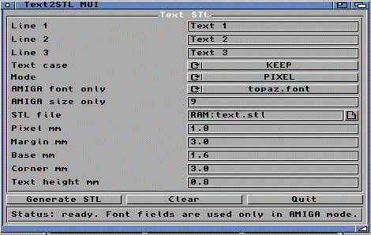

|
Menu | SlicerMUI | 3DView
Text2STLMUI

A quoi ca sert ?
Text2STLMUI cree un STL ASCII a partir de texte. C'est utile pour faire des
plaques, badges, etiquettes ou petits objets texte a imprimer.
Modes de fonte
| PIXEL | Fonte 5x7 integree. Simple, lisible, tres fiable pour impression 3D. |
| AMIGA | Utilise une fonte Amiga disponible. Le resultat depend beaucoup de la fonte. |
Le mode PIXEL est recommande pour les premiers essais. Il donne un style
pixel art tres lisible.
Champs
| Line 1/2/3 | Texte sur plusieurs lignes. |
| Output STL | Chemin du fichier STL a creer. |
| Font mode | PIXEL ou AMIGA. |
| Font | Fonte Amiga a utiliser si mode AMIGA. |
| Case | Garder le texte, mettre en majuscule ou minuscule. |
Conseils
- Visualisez le STL dans 3DView avant de slicer.
- Evitez les textes trop longs pour une petite imprimante.
- Certaines fontes Amiga ne sont pas adaptees a la 3D.
- Les accents dependent de la fonte et ne sont pas garantis partout.
Retour menu
|